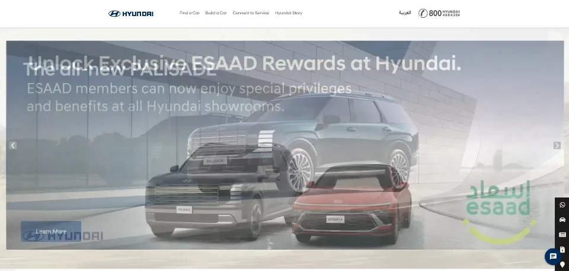
- Sector
- Automotive
- Build
- iPad app
- Status
- Live
Hyundai (opens the live site)
A rapidly built iPad app for Hyundai Motors Group, presented at Expo 2020’s Korean pavilion.
Our work · Mission archive
Platforms, apps and campaigns for brands people already know, designed, built, and kept sharp long after launch.
Mission archive
Sixteen live transmissions and two in final countdown. Point at a screen to see it in its true colours; open it to visit it live.

A rapidly built iPad app for Hyundai Motors Group, presented at Expo 2020’s Korean pavilion.

Our own studio site, designed in-house, built by Worx, and tuned to rank among the best on Google’s Lighthouse.
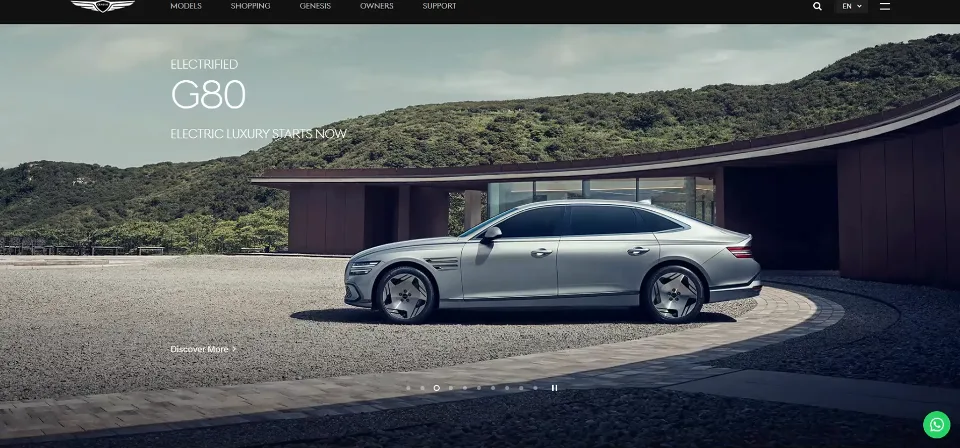
Web development and upkeep for the Genesis MEA pages, supporting the marque’s regional luxury launch.
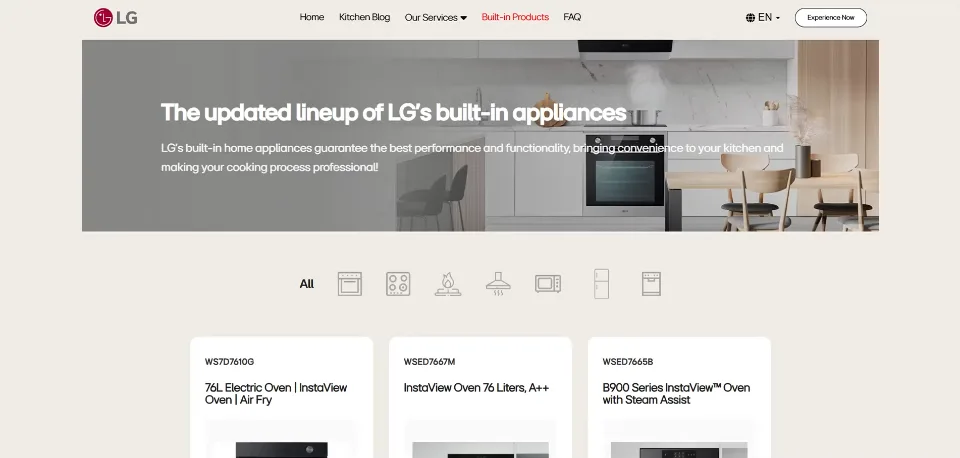
Interactive planning tools that let customers visualise and configure LG’s kitchen range before they buy.
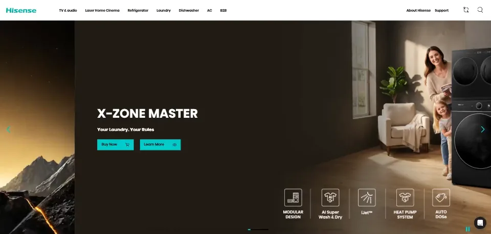
Regional campaign web builds and content rollouts for one of the world’s fastest-growing appliance brands.
Website design and development for Casio and Casio Music, supporting the brand’s regional electronics lineup.
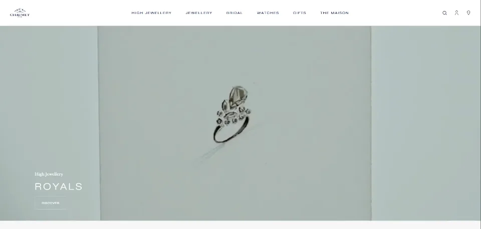
Tailor-made online flagship for the 240-year-old jewellery Maison, built for luxury shoppers across the MENA region.
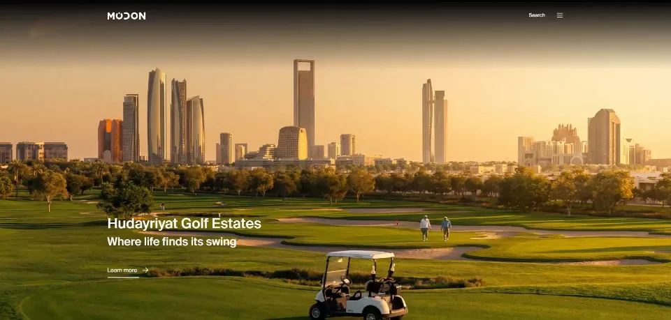
Ongoing care of the corporate site for one of the UAE’s leading sustainable developers , Drupal, on-page SEO and press releases.
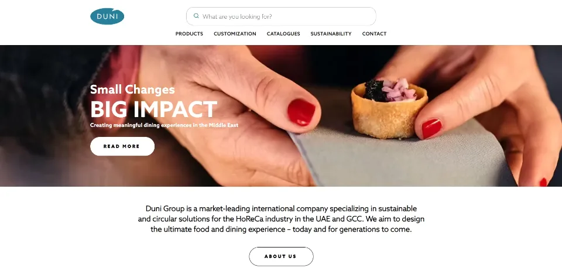
Website design and development for Duni Middle East, presenting the brand’s premium napkins and table covering collections.

Creative direction across photos, videos and bilingual content under the theme “Land of Dreamers Who Do”.

iOS and Android app upkeep plus the Marsana Events subpage for Abu Dhabi’s leisure and recreation estate.
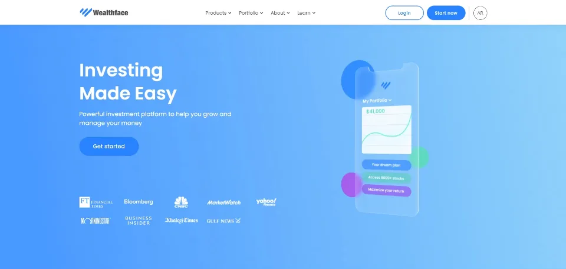
An ongoing development partnership on an investment platform where security and clean UX are non-negotiable.
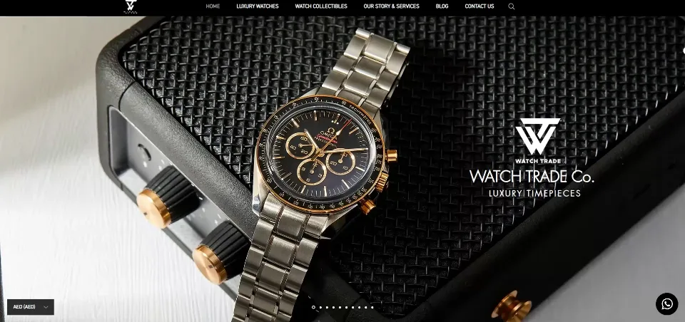
Website design and development for Watch Trade Co., supporting the brand’s luxury watch trading platform.
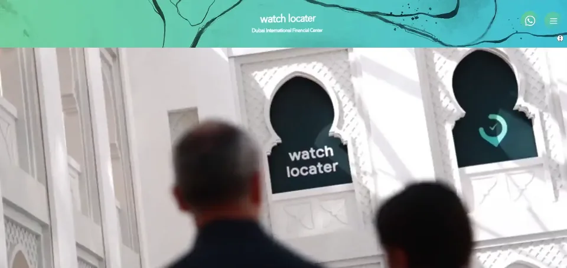
Website design and development for Watch Locater, helping collectors discover and source luxury timepieces.
Website design and development for SEPHORiA, supporting the brand’s regional electronics retail presence.
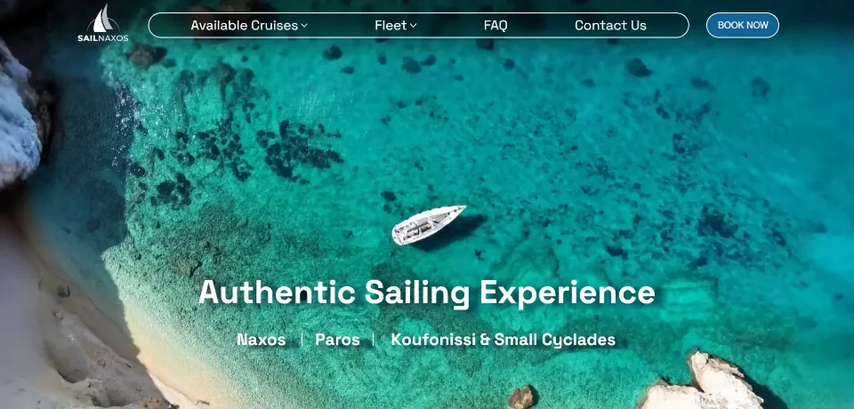
Website design and development for Sail Naxos, supporting the operator’s sailing tours and island excursions.
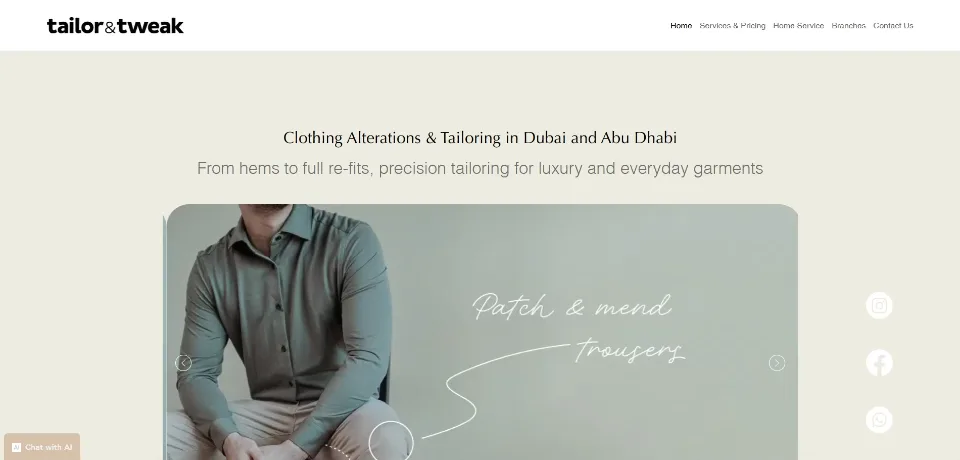
Website design and development for Tailor & Tweak, presenting the brand’s made-to-measure tailoring services.
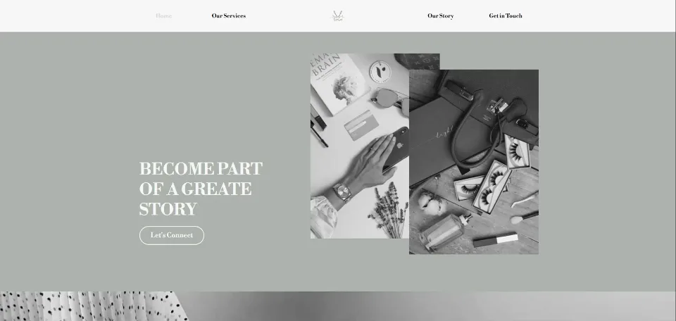
High-value campaign engineering, targeting, budgets and creative formats tuned until daily enquiries became the norm.
 SIGNAL INCOMING
SIGNAL INCOMING